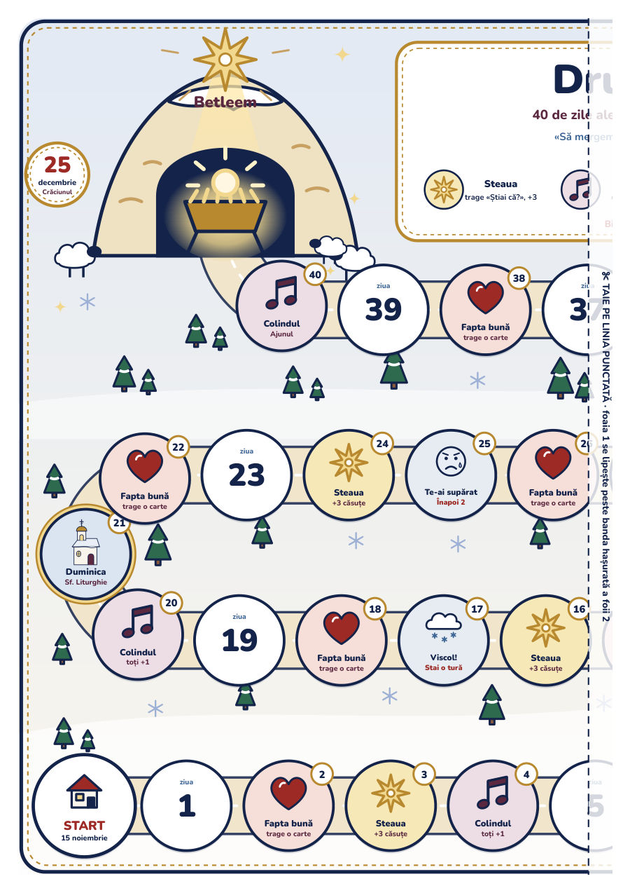
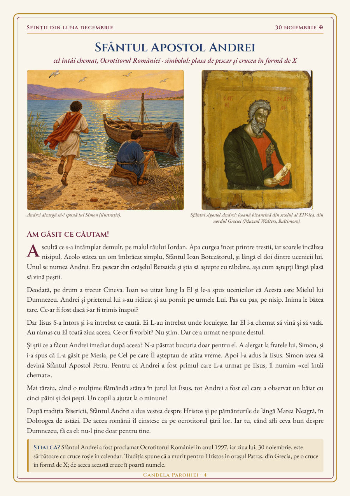
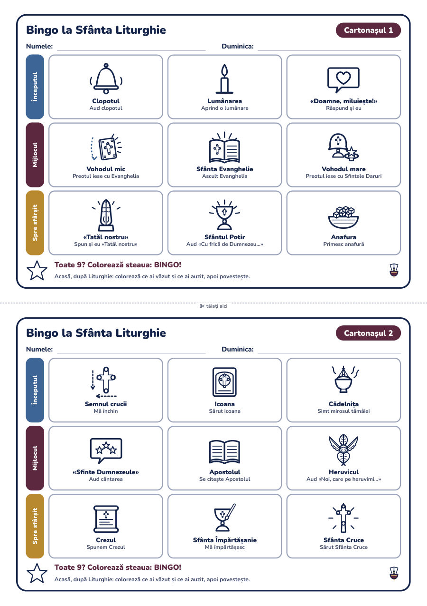
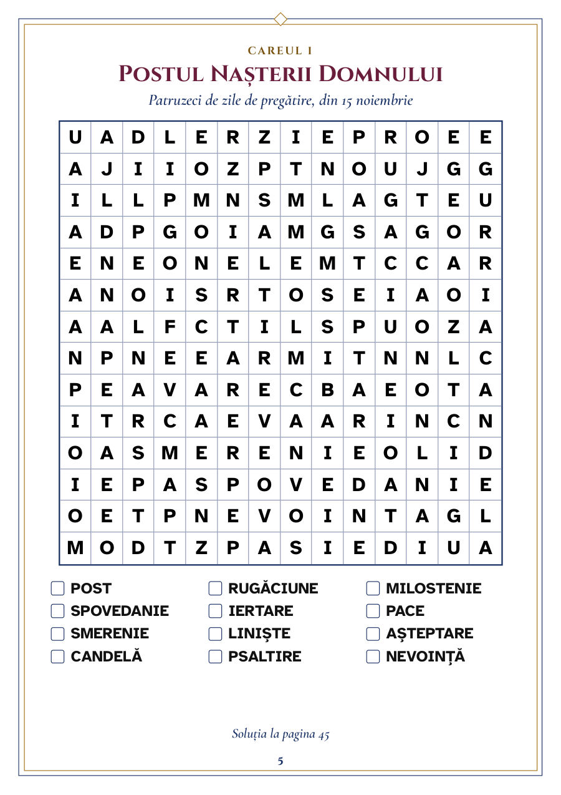
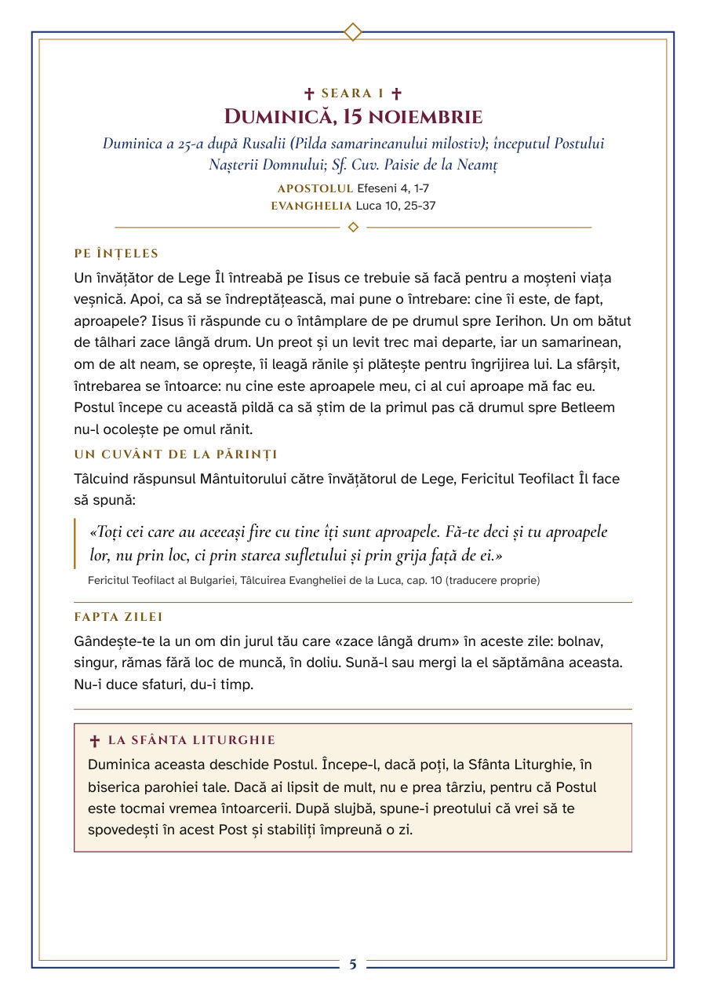

Materialele de Crăciun pentru toți copiii parohiei
Un joc de masă, povestirile sfinților din decembrie, Bingo pentru după Liturghie, careuri și cărți pentru bunici și pentru cei mari. Le tipăriți oricâte exemplare, le trimiteți familiilor și le proiectați la cateheză.
Dacă materialele nu vă folosesc, Gumroad vă înapoiază banii în 30 de zile. Misiunilor și parohiilor fără mijloace le dăm licența gratuit: scrieți-ne la aisib@proton.me.
Cum arată





Conținutul licenței
| Material | Pentru cine | Ce este |
|---|---|---|
| Jocul «Drumul spre Betleem» | 2-6 jucători, de la 5 ani, toată familia | Joc de masă de cooperare: 40 de căsuțe, de pe 15 noiembrie până la Crăciun, cărți cu fapte bune, instrucțiuni (19 pagini A4) |
| Povestirile Sfinților din luna decembrie | copii de 6-11 ani | 10 povestiri pe înțelesul copiilor, cu întrebări și jocuri (30 de pagini A4) |
| Bingo la Sfânta Liturghie | copii de 4-10 ani | 6 cartonașe de colorat după slujbă și o pagină pentru părinți: ce înseamnă fiecare imagine (8 pagini) |
| Careurile, Popasurile de duminică și Sfântul Nicolae | copii de 4-11 ani | careuri pentru Post, câte o pagină pentru fiecare duminică din Post și broșura «Sfântul Nicolae, grabnic ajutător» |
| Seri de Crăciun cu bunicii | bunicii din parohie | careuri, povestiri și colinde cu litere mari (56 de pagini A4) |
| Drumul spre Betleem, pentru cei mari | tineri și adulți | 40 de seri: Evanghelia zilei, un cuvânt al Sfinților Părinți, fapta zilei (46 de pagini A4) |
| Licența | parohia | un PDF de o pagină cu numele parohiei, pe care îl scrieți la plată |
Toate sunt PDF-uri A4 de tipărit acasă sau la parohie, color. Textele biblice sunt citate după Biblia Sinodală, iar cuvintele Sfinților Părinți, cu sursa.
Ce vă permite licența
- să tipăriți oricâte exemplare pentru copiii și familiile parohiei;
- să trimiteți fișierele familiilor parohiei pe e-mail sau pe grupul închis al parohiei;
- să le proiectați la cateheză sau în sala parohială și să folosiți jocul la cateheză.
Ce nu permite
- vânzarea materialelor, tipărite sau ca fișier;
- publicarea lor pe internet și darea lor altor parohii.
Toate pornesc de la Sfânta Liturghie: copiii aud Evanghelia duminică, în biserică, iar acasă și la cateheză materialele îi ajută să și-o amintească.
Licența pentru o parohie: 19 €Pentru o singură familie ajunge pachetul «Tot decembrie pentru copii». Întrebări: aisib@proton.me.